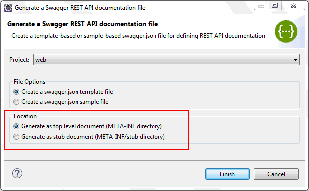
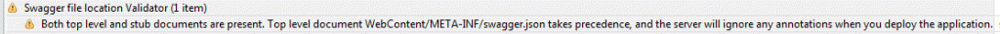
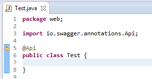
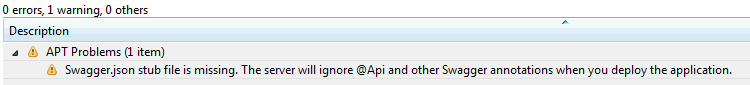
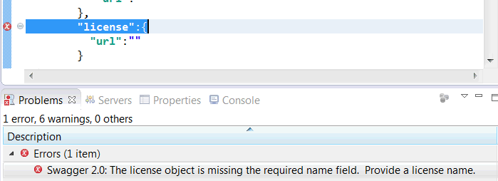
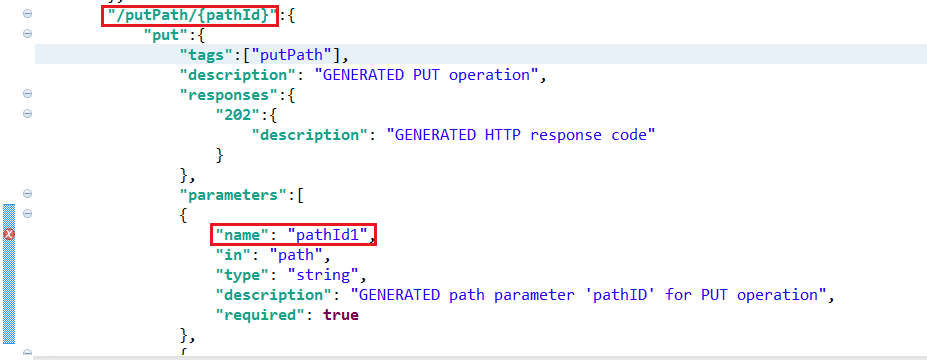
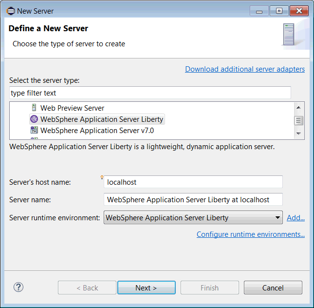
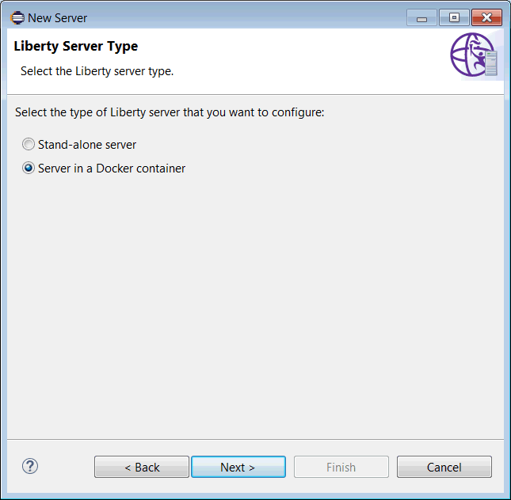
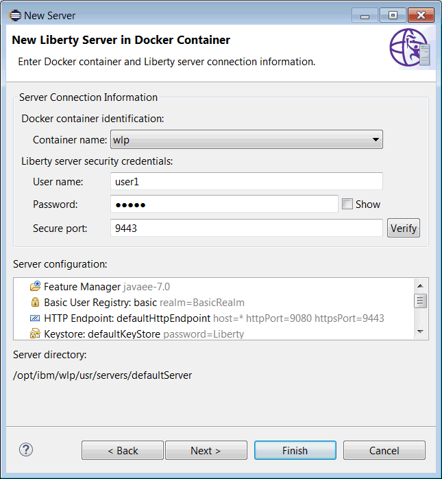
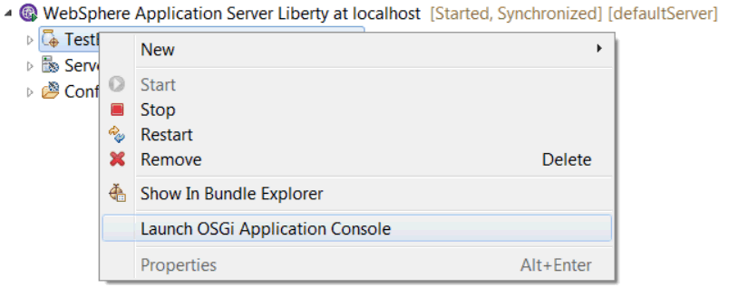

Since delivering Java EE 7 Full Platform compliance back in June, we’ve been finishing off some of the other WebSphere Liberty features that we’ve beta‘d over the past few months.
New features in Liberty and WebSphere Developer Tools (WDT)
Find all the new features in the Liberty Repository.
- OSGi Applications and Java EE 7
- OSGi Application support for Java EE 7 technologies is now available along with a new way to configure OSGi support using
osgiBundle-1.0and a new zip package giving you all the latest OSGi capabilities.
- OSGi Application support for Java EE 7 technologies is now available along with a new way to configure OSGi support using
- Cross-Origin Resource Sharing (CORS) The long awaited support for CORS is here! You can now configure all aspects of the CORS spec right into
server.xml, for any application deployed on Liberty.- Here’s a sample configuration:
<cors domain="/sampleApp/path" allowedOrigins="https://alice.com:8090" allowedMethods="GET, DELETE, POST" allowedHeaders="Accept, MyRequestHeader1" exposeHeaders="MyResponseHeader1" allowCredentials="true" maxAge="3600" />
- Here’s a sample configuration:
- Updates to REST API Discovery
- See also Developing REST API definition files
- YAML support The Liberty REST API Discovery framework now interchangeably supports both JSON and YAML formats. You can provide either format and query either format; it all merges and renders perfectly! This means you can now:
- Provide Liberty with your
swagger.jsonORswagger.yamldocument inside<webModule>/META-INF. - Use and accept header of
application/yamlwhen queryingGET /ibm/api/docsand you’ll be returned the aggregated Swagger 2.0 document in YAML format. - Continue to use the
/ibm/api/exploreras before, regardless of whether some documents are being provided as JSON and other as YAML.
- Provide Liberty with your
- Stub merging
- You can now provide a
swagger.jsonorswagger.yamldocument inside<webModule>/META-INF/stuband Liberty’s REST API Discovery framework will automatically merge those contents with any JAX-RS annotations that we find. This is useful for the scenarios where your web module has regular servlets (non JAX-RS) that you want to document in addition to any JAX-RS endpoints. - You can also use this methodology to augment your existing annotations with extra information such as security constraints.
- The “Swagger REST API documentation file” wizard has been modified to support creation of a
swagger.jsonfile on the stub directory:
 - WDT (the Eclipse tools) warns you if your project contains both a top-level and a stub
swagger.jsonfile. In such a scenario, the top-level documents takes precedence. The validator ensures that you know this:
 - WDT also warns you if you’re using Swagger annotations but there’s no
swagger.jsonfile on the stub directory:

 - When a project with a
swagger.jsonfile on theMETA-INF/stubdirectory is deployed to the server, theapiDiscovery-1.0feature is automatically added (previously it was only added if the file was atMETA-INFdirectly, now it’s added in both cases).
- You can now provide a
- Validation support
- WDT detects certain scenarios from the Swagger specification to help ensure that you’re developing valid
swagger.jsonfiles. One such scenario is the detection of missing, required elements. In the following case, the license object requires a name, which is missing:
 - There’s also validation for the
Parameterobject and these are just a few of the scenarios we validate:- Defined path parameter names must show up in the Path Item URI. For example, the
pathId1name must appear as a variable in thePath Itemobject URI"/putPath/{pathId}":
 - Appropriate fields are used for body parameters i.e. use of ‘type’ in a body parameter will result in an error.
- Either the use of multiple body parameters or the use of
formDataand body parameter will result in an error.
- Defined path parameter names must show up in the Path Item URI. For example, the
- WDT detects certain scenarios from the Swagger specification to help ensure that you’re developing valid
- Performance enhancements to collective view
- We have improved the load-time performance of the collective-wide UI explorer (
/ibm/api/collective/explorer) so now you can browse your collective services much faster! - There are also two new query parameters available for
/ibm/api/collective/docsrelated to performance:showDuplicateswhich enables documentation of duplicate APIs (false by default, for compact docs), andshowTagsOnly, which retrieves only the tags of the collective members (false by default).
- We have improved the load-time performance of the collective-wide UI explorer (
- Context root requests If your web module provides either
swagger.jsonorswagger.yamlfrom its context root, you no longer have to write any configuration insideserver.xmlfor it.- During startup of the web module, the REST API Discovery framework will check if
<webModule_contextRoot>/swagger.jsonor<webModule_contextRoot>/swagger.yamlare available and will automatically expose that Swagger 2.0 document. This is useful for applications that have a pre-generated Swagger 2.0 already exposed from its context root as don’t need any extra configuration. - Any web module in Liberty that is providing Swagger 2.0 documentation through any means (i.e. annotations, pre-generated, stub merging, etc) can now directly reach the documentation by invoking
<webModule_contextRoot>/swagger.jsonor<webModule_contextRoot>/swagger.yaml. - Except in cases where the application has explicitly blocked access to it, the REST API Discovery framework auto-detects this request from the web container and automatically responds with the Swagger 2.0 document.
- During startup of the web module, the REST API Discovery framework will check if
- Collective explorer Last beta, we announced the new
/ibm/api/collective/docsendpoint. This beta we have its visual counterpart available,/ibm/api/collective/explorer!- It is very similar to
/ibm/api/explorer, except that this endpoint is only available in the Liberty Collective Controller. It will also show all REST APIs that are available from any of the members of that Liberty Collective. - The filter box for the collective UI also has been enhance to allow filtering based on Collective Member ID (a comma-separated tuple of the member’s
hostName, URL-encodedwlp/usr path, andserverName).
- It is very similar to
- Websocket subscription You can now subscribe to receive real-time updates on the REST APIs of a Liberty server.
- This means that you can instantly know if a new application has been deployed with new REST endpoints, or if an existing set of endpoints has been dynamically removed. Simply subscribe to the
/ibm/api/docs/subscriptionendpoint and you’ll receive a WebSocket URL which you can open and listen for updates. - You can also subscribe for collective-wide notifications, by calling
/ibm/api/collective/docs/subscriptionon the collective controller.
- This means that you can instantly know if a new application has been deployed with new REST endpoints, or if an existing set of endpoints has been dynamically removed. Simply subscribe to the
- Advanced JAX-RS scenarios We updated our JAX-RS 1.1 and 2.0 support to handle multiple URL mappings and different deployment scenarios, such as auto-generated or explicitly defined servlets. Now your annotations will be transformed into Swagger 2.0 documentations even in these advanced scenarios.
- Proper WAB support The Liberty REST API Discovery framework now properly scans OSGi Web Application Bundles (WABs) for Swagger related content (annotations or pre-generated), just like any other deployed web modules.
- Integration with API Connect Liberty now provides a direct integration with API Connect by exposing two new RESTful endpoints:
ibm/api/docs/apiconnectandibm/api/collective/docs/apiconnect. The endpoints publish the definition of Liberty’s deployed applications, or a collective’s set of deployed applications, into a target API Connect catalog. This bypasses the need for any work on the API Connect management UI and simplifies the exposure of assets through the API Connect gateway. These new endpoints can be called using Liberty’s native Swagger UI, or even from a continuous integration environment using curl.
- Custom password encryption support
- The Liberty runtime now provides an SPI for custom password encryption. You can write a user feature to secure passwords using your own algorithm.
- Security
- Write applications to programmatically log in using file-based custom log-in configurations. This is in addition to the existing
server.xmlconfiguration support. - Use custom JAAS log-in configurations to perform programmatic login to Java 2 connectors. This removes the need to store user names and passwords in the server configuration.
- Get user credentials from the authdata configuration using the
WSPrincipalMappingLoginModule.
- Write applications to programmatically log in using file-based custom log-in configurations. This is in addition to the existing
- Log consolidation with Logstash Collector
- Consolidation of log events, from multiple servers and from servers that are running on different platforms, to a centralized location has always been a challenge. Traditionally this has involved setting up agents on each server to collect the required data, and potentially parsing events for generating a structured data format as required by different endpoints.
- The Logstash Collector feature (
logstashCollector-1.0) is designed to capture the in-flight events, break them into fields, format the events as a JSON object, and securely forward the events to a configured logstash server running remotely, without you needing to install any special agents in your individual servers. Logstash can be used with the Elasticsearch search server and Kibana dashboard, all of which you provide, set up, and manage, to give a consolidated view of logs or other events from across your enterprise.
{kind=link}
{kind=link}
{kind=link}
{kind=link}
{kind=link}
{kind=link}
Also new in this release
- Migration Toolkit
- When selecting a target application server of WebSphere Application Server traditional V8.5.5, Liberty, or Liberty Core, you can now optionally select a target cloud runtime environment. By selecting a target cloud runtime, both the rules for the specific cloud runtime environment and the new connectivity rules for the target application server are selected.
- New rules were added to evaluate your application’s use of the following resources that might have connectivity considerations when moving applications to the cloud. These rules are flagged only once per Eclipse project (or Java archive) to indicate the individual technologies that are used:
- Databases
- Enterprise Information Systems (EIS)
- Java EE security
- JavaMail server
- Java Message Service (JMS)
- Message-Driven Beans (MDB)
- Remote EJB lookups
- Remote EJB providers
- Remote web services
- Third-party security
- Vendor-specific messaging
- Find out more about migrating to Liberty.
- Create a server in WDT for Liberty running in a local Docker container
- This means that you can treat a Liberty server running in a local Docker container like a local Liberty server for development purposes. Deploy, modify, and debug applications as if you were working with a local Liberty server.
- In the new server wizard, click IBM > WebSphere Application Server Liberty and specify
localhostfor the server’s host name:
 - Create a runtime, if you have not done so already, and then on the Liberty Server Type page select Server in a Docker container:
 - Select the Docker container to use and fill in the Liberty server security credentials. If you don’t have a user defined, WDT will create it for you using the name and password you specified. Note that the HTTP and HTTPS ports must be mapped to the host when you create your container.
 - Click the Verify button to establish a connection and then click Finish. You now have a workspace representation of a Liberty server running in a Docker container!
- In the new server wizard, click IBM > WebSphere Application Server Liberty and specify
- This means that you can treat a Liberty server running in a local Docker container like a local Liberty server for development purposes. Deploy, modify, and debug applications as if you were working with a local Liberty server.
- OSGi Application Console
- You can now use the
osgiAppConsole-1.0feature view the OSGi Bundles in a deployed OSGi application, navigate their package and service dependencies. This is a great tool for problem determination. - Tools support for OSGi Application Console feature
- Launch your Liberty server’s OSGi Application Console and the OSGi Shared Bundle Console from the Eclipse tools. Liberty introduced the
osgiAppConsole-1.0feature to provide a way to analyze your OSGi applications. Now we’ve provided simple ways to launch the consoles from within the tools. - From within the Servers view, simply click Launch OSGi Application Console from your OSGi application’s context menu (you can also find an action to launch the OSGi Shared Bundle Console in the server’s Utilities menu):

- Launch your Liberty server’s OSGi Application Console and the OSGi Shared Bundle Console from the Eclipse tools. Liberty introduced the
- You can now use the
{kind=link}
{kind=link}
{kind=link}
{kind=link}